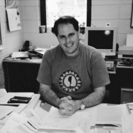

Please note: the AAS Obituaries are temporarily being hosted on this website while their full content is being ingested into the PubPub publishing platform newly adopted by the Bulletin of the American Astronomical Society. When the migration is complete, your existing links will take you to the final, migrated content. Contact peter.williams@aas.org with any questions.
Richard Joseph Elston (1960-2004)
Richard Joseph Elston, known for his development of innovative astronomical instrumentation, died on 26 January 2004 in Gainesville, Florida, after a four-year battle with Hodgkin's lymphoma. A professor of astronomy at the University of Florida, Richard had an unusually broad range of interests and skills, and a willingness to share his passion for astronomy with others, which made him a highly valued member of the astronomical community.
Born 1 July 1960, in Albuquerque, New Mexico, Richard was the son of a geologist father and journalist mother. His childhood interest in astronomy and instrumentation matured as he majored in physics and astronomy at the University of New Mexico (BS, 1983) under the mentorship of Michael Zeilik. Richard pursued his PhD in astronomy at the University of Arizona and earned his degree in 1988. He pioneered the use of IR arrays for deep imaging surveys of the sky to study galaxy formation, and completed his thesis "Search for Rapidly Forming Galaxies at High Redshift" under the direction of George Rieke. Richard's graduate work included the first detection of galaxies at intermediate redshifts with evolved populations too red to have been identifiable from optical imaging surveys alone. In the Astrophysical Journal Letters in 1988, he, George Rieke, and Marcia Rieke reported the discovery of this new class of galaxies, now known as EROs (Extremely Red Objects), important as the possible progenitors of present day elliptical galaxies.
Following post-doctoral positions at Kitt Peak National Observatory from 1988 to 1991 and at the Observatories of the Carnegie Institution of Washington from 1991 to 1992, Richard joined the scientific staff of Cerro Tololo Inter-American Observatory in Chile, part of the NSF's National Optical Astronomy Observatory. By 1994, he had become head of CTIO's IR instrumentation program and was leading the development of new instruments for the US astronomical community.
In 1996, Richard married astronomer Elizabeth Lada, and both joined the faculty of the University of Florida. They worked closely together and with their colleagues to develop the department into a leading center for astronomical research. Richard assembled a strong near-IR instrument team whose most recently completed instrument was FLAMINGOS, the FLoridA Multi-object Imaging Near-IR Grism Observational Spectrometer. FLAMINGOS serves as both a wide-field IR imager and multi-object spectrograph. Successfully used at the 6.5-m MMT Observatory, 8-m Gemini South telescope, and KPNO 2.1-m and Mayall 4-m telescopes, FLAMINGOS allows scientists to complete observations in one night that would previously have required 100 nights. FLAMINGOS is the primary instrument for several major survey programs that are studying topics ranging from how individual stars and planets form to how the largest structures in the Universe evolve.
One of Richard's innovations with FLAMINGOS was the use of a separate "pre-dewar" that maintains at cryogenic temperatures the multi-slit masks required to select the targets for observation, but can be thermally cycled more quickly than the entire instrument. This feature allows the changing of masks on a nightly basis. New instruments having the innovations pioneered with FLAMINGOS are under construction and are to be used at several of the world's largest telescopes in the decades ahead.
Richard was involved in getting both the University of Florida and the U.S. astronomical community on the path toward larger telescope facilities. He played a crucial role in the University of Florida's joining the team building the 10.4-m Grand Telescope of the Canary Islands. As a member of the panel that studied optical/near-IR astronomy from the ground for the most recent (2000) National Academies decadal review of astronomy, Richard was a passionate advocate for open access to the next large (30-m class) telescope to be built. The final report included a recommendation for a public role in such a telescope. Richard's work as a researcher and educator was recognized in 2000, when he was named a recipient of the Presidential Early Career Awards for Scientists and Engineers.
With the birth of his son, Joseph, in 1999, Richard's life reached an important milestone. During his battle with cancer, Richard awed everyone with his ability to be productive professionally and still be so devoted to his family. He and his son shared a love for the outdoors and adventure. Richard was an expert SCUBA instructor, skier, hiker, wind surfer, airplane pilot, and sailor. Joseph is already a "proto-naturalist." Richard will be best remembered as a wonderful father, beloved husband, loving brother, son, uncle, friend and inspiration to all whose lives he touched.
Reprinted with permission from Physics Today, Vol. 57, No.7, pp. 76-77. Copyright 2004, American Institute of Physics.
Obituary written by: Buell Tomasson Jannuzi (National Optical Astronomy Observatory), Jill Bechtold (University of Arizona)
BAAS Citation: BAAS, 2004, 36, 1670
SAO/NASA ADS Bibcode: 2004BAAS...36.1671J